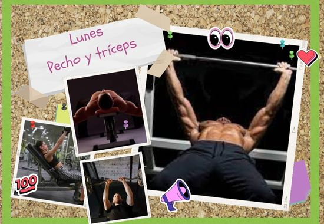
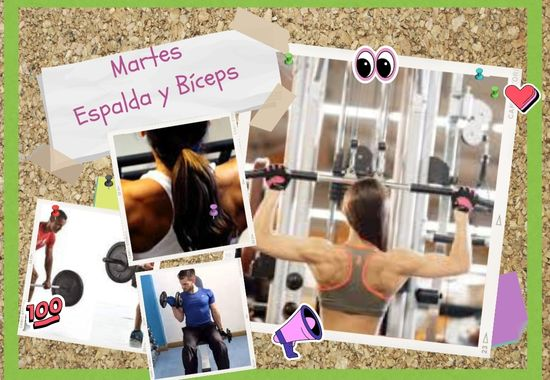
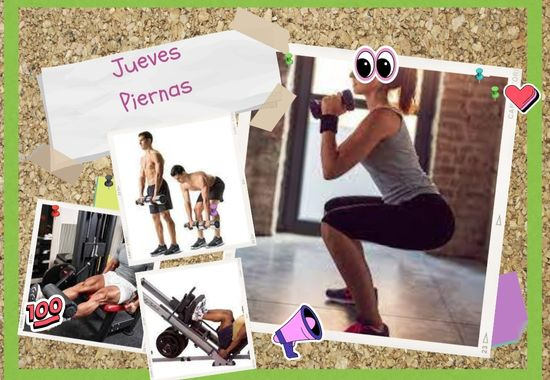

-
Rutinas para Ectomorfos

Lunes: Pecho y tríceps:
-

Martes: Espalda y bíceps
-
Miércoles – Descanso
-

Jueves: Piernas
-
Viernes: Hombros y trapecios
-
Press militar con mancuernas –4 series de 12, 10, 8 y 8 repeticiones.
-
Elevaciones laterales con mancuernas – 4 series de 12, 10, 10 y 8 repeticiones.
-
Elevaciones posteriores con mancuernas –4 series de 12, 10, 10 y 8 repeticiones.
-
Elevaciones frontales de disco –4 series de 15, 12, 10 y 10 repeticiones.
-
Encogimiento de hombros con mancuernas –4 series de 12, 10, 10 y 8 repeticiones.
-
Elevaciones de rodillas en paralelas –4 series de 15 repeticiones .